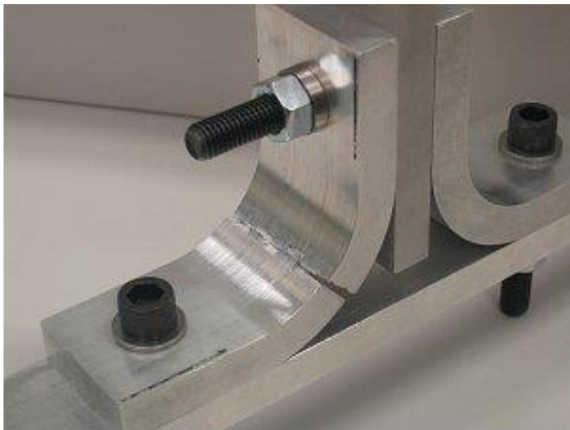
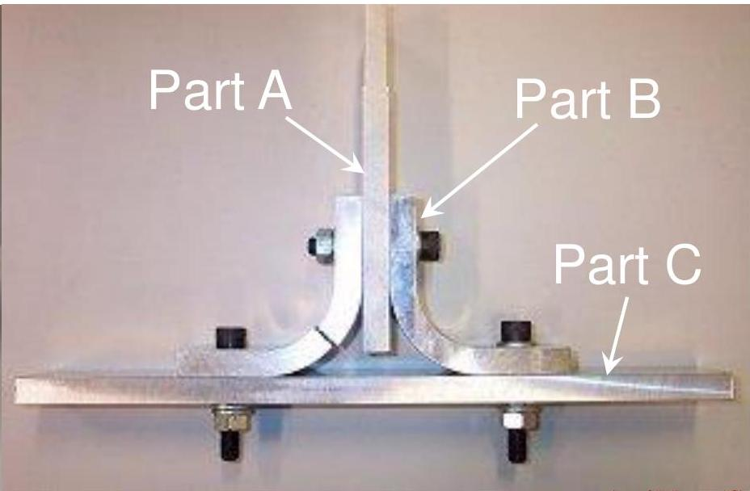
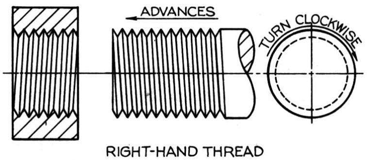
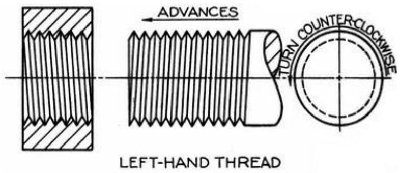
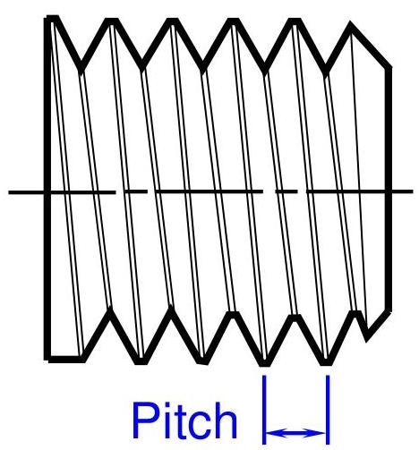
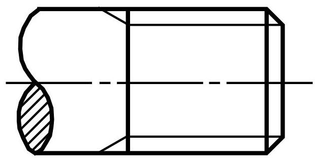
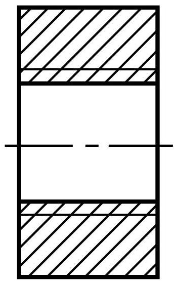
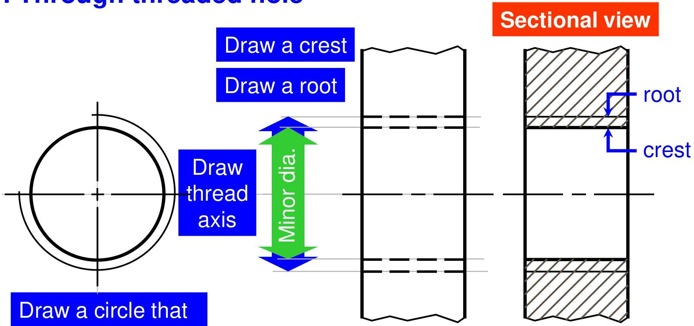

🔩
Topic 08
Fastening Devices
01
Temporary Fastening
When parts of a machine are joined in such a way that these can be dismantled or re-assembled again easily, it is called temporary fastening.
Threaded Fasteners
- Bolts
- Studs
- Screws
Non-Threaded Fasteners
- Keys
- Pins
Thread Applications
1. To hold parts together
2. To move part(s) relative to others
02
Thread Terminology
| External Thread | A thread cut on the outside of a cylindrical body. |
| Internal Thread | A thread cut on the inside of a cylindrical body. |
Right-hand Thread
Thread that will assemble when turned clockwise.
Left-hand Thread
Thread that will assemble when turned counter-clockwise.
Thread Geometry
- Crest: The outer-most part of a thread.
- Root: The bottom of the thread cut into a cylindrical body.
- Thread Angle: The angle between threads faces.
- Major Diameter: The largest diameter on an internal or external thread.
- Minor Diameter: The smallest diameter on an internal or external thread.
- Pitch: The distance between crests of threads.

03
Thread Cutting Operations
Tools and operations differ for external and internal threads.
External Thread Cutting
Tools
- Threading Die
- Die Stock
Operation
The die is rotated onto the rod to cut the external thread.
Internal Thread Cutting
Tools
- Twist Drill (for pre-drilling)
- Tap
- Tap Wrench
Operation
A hole is first drilled, then the tap is rotated into the hole to cut threads.
04
Drawing Representation
Standard Convention
Use thick continuous lines for representing crest and thin continuous lines for representing root of the thread.
Simplified Representation


Drawing Steps of Threaded Hole
- 1 Section lines are drawn into the crest of a thread.
- 2 Draw a circle that represents a crest.
- 3 Draw an arc that represents a root.

Dimensioning Note
Use local notes to specify:
8.50 Drill, 20 Deep,
M10 Tapped, 15 DeepThis specifies tap drill size, drill depth, thread form (M), nominal size (10), and thread depth.